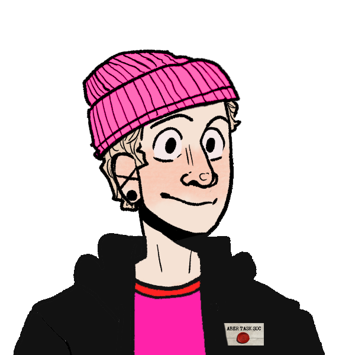

I'm David Llewelyn Davies (Dave) and this is my very homemade website.
If you would like to learn more about me, click on the sentences below!
The modules I studied were:
| First year | Second year | Third year |
|---|---|---|
| Problems and Solutions | Algorithm Design and Data Structures | Major Project |
| Fundamentals of Web Development | Psychology of Humour | Computer Vision |
| Professional and Personal Development | Software Engineering | Professional Issues in the Computing Industry |
| Introduction to Programming | Applied Graphics | Fundamentals of Machine Learning |
| Functional Programming | Modelling Persistent Data | Computer Graphics and Games |
| Introduction to Computer Infrastructure | Artificial Intelligence | Mobile Development with Android |
| Programming Using an Object-Oriented Language | ||
| Information security |
I founded the taskmaster society in 2021 and was the president for three years. I made youtube videos interacting with the society over one summer.
I was president of the improv society for a few months.
I was vice president of the gaming society (Aberystwyth Community Of Gamers (ACOG)) for a year. I helped run the LAN event and made many advertisements for it, in which we raised £1581.50 for charity.
I founded and ran Queer++, a social group for LGBTQ+ Aberystwyth computer science students. It met weekly for a year, and the discord is still in use.
I founded and ran Pokemon Go Aberystwyth, a discord for local pokemon go players. The discord is still in use, as is the bot I created for it.
I was treasurer of the craft society for a few months.
